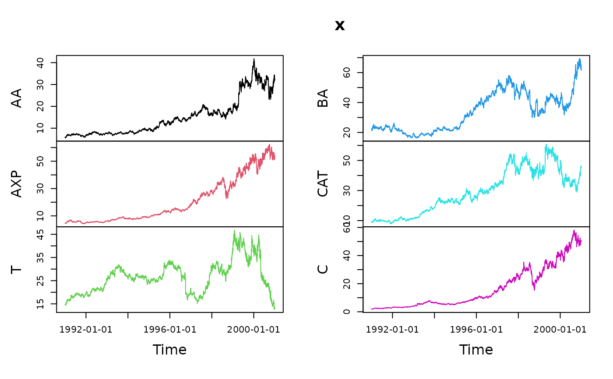

fBasics Data Sets
data-examples.RdThe following data sets are part of this package:
Capitalization | Market capitalization of domestic companies, |
cars2 | Data for various car models, |
DowJones30 | Down Jones 30 stocks, |
HedgeFund | Hennessee Hedge Fund Indices, |
msft.dat | Daily Microsoft OHLC prices and volume, |
nyse | NYSE composite Index, |
PensionFund | Swiss Pension Fund LPP-2005, |
swissEconomy | Swiss Economic Data, |
SWXLP | Swiss Pension Fund LPP-2000, |
usdthb | Tick data of USD to THB. |
Details
Capitalization:Capitalization
contains market capitalization of domestic companies from
2003 - 2008 in USD millions.
cars2:cars2
contains the price, country, reliability, mileage, type, weight,
engine displacement and net horsepower of various car
models.
DowJones30:DowJones30
contains daily observations from the Dow Jones 30 Index series.
Each of the thirty columns represents the closing price
of a stock in the Index.
HedgeFund:HedgeFund
contains monthly percentual returns of various hedge fund
strategies from Hennessee Group LLC.
msft.dat:msft.dat
contains daily prices (open, high, low and close) and
volumes for the Microsoft stocks.
nyse:nyse
contains daily records of the NYSE Composite Index.
PensionFund:PensionFund
is a daily data set of the Swiss pension fund benchmark LPP-2005.
The data set ranges from 2005-11-01 to 2007-04-11.
The columns are named: SBI, SPI, SII, LMI, MPI, ALT, LPP25, LPP40, LPP60
swissEconomy:swissEconomy
contains the GDP per capita, exports, imports, interest rates, inflation,
unemployment and population for the years 1964 - 1999 for Switzerland.
SWXLP:SWXLP
is a daily data set of the Swiss pension fund benchmark LPP-2000.
The data set ranges from 2000-01-03 to 2007-05-08.
The columns are named: SBI, SPI, SII, LP25, LP40, LP60.
usdthb:usdthb
Tick data of US Dollar (USD) in Thailand Bhat (THB) colleted from
Reuters. Format: YYYYMMDDhhmm. Column variables: delay time,
contributer, bid and ask prices, and quality flag. It covers the
Asia FX crisis in June 1997.
References
Capitalization:
World Federation of Stock Exchanges,
http://www.world-exchanges.org/statistics.
cars2:
Derived from the car90 dataset within the rpart package.
The car90 dataset is based on the car.all dataset in S-PLUS.
Original data comes from:
April 1990, Consumer Reports Magazine,
pages 235-255, 281-285 and 287-288.
DowJones30
http://www.yahoo.com.
HedgeFund:
http://www.hennesseegroup.com/indices/returns/year/2005.html.
msft.dat:
http://www.yahoo.com.
nyse:
http://www.nyse.com.
PensionFund:
SBI, SPI, SII: SIX (Swiss Exchange Zurich);
LPP25, LPP40, LPP60: Banque Pictet Geneva;
LMI, MPI, ALT: Recalculated from the indices and benchmarks
swissEconomy:
http://www.oecd.org/ and http://www.imf.org/.
SWXLP:
SBI, SPI, SII: SIX (Swiss Exchange Zurich);
LPP25, LPP40, LPP60: Banque Pictet Geneva
usdthb:
Reuters Select Feed Terminal (1997).
Examples
## Plot DowJones30 Example Data Set
series <- timeSeries::as.timeSeries(DowJones30)
head(series)
#> GMT
#> AA AXP T BA CAT C KO DD EK XOM GE GM
#> 1990-12-31 5.92 4.70 14.67 21.77 9.30 1.87 9.88 13.15 23.02 12.09 4.63 19.72
#> 1991-01-02 5.92 4.70 14.67 21.77 9.30 1.87 9.88 13.15 23.02 12.09 4.63 19.72
#> 1991-01-03 5.88 4.73 14.73 21.71 9.15 1.87 9.60 12.83 22.95 12.15 4.53 19.57
#> 1991-01-04 5.76 4.73 14.79 22.50 9.00 1.92 9.85 13.06 22.74 12.27 4.47 19.00
#> 1991-01-07 5.72 4.58 14.67 21.65 8.87 1.89 9.69 12.83 22.11 12.12 4.40 18.35
#> 1991-01-08 5.63 4.53 14.73 21.34 9.05 1.85 9.60 12.60 22.18 12.09 4.44 18.28
#> HWP HD HON INTC IBM IP JPM JNJ MCD MRK MSFT MMM
#> 1990-12-31 3.91 2.80 5.70 1.20 27.86 20.45 2.67 7.31 7.08 11.83 2.08 31.41
#> 1991-01-02 3.91 2.80 5.70 1.20 27.86 20.45 2.67 7.31 7.08 11.83 2.08 31.41
#> 1991-01-03 3.91 2.74 5.67 1.20 27.95 20.21 2.67 7.23 6.99 11.45 2.09 30.90
#> 1991-01-04 3.85 2.75 5.65 1.20 27.86 20.50 2.69 7.18 7.02 11.27 2.11 30.80
#> 1991-01-07 3.88 2.65 5.50 1.19 27.39 20.45 2.58 6.96 6.80 10.97 2.08 30.43
#> 1991-01-08 3.90 2.59 5.47 1.18 27.08 20.26 2.58 7.02 6.83 11.01 2.04 29.65
#> MO PG SBC UTX WMT DIS
#> 1990-12-31 10.55 20.91 9.75 9.31 7.05 7.86
#> 1991-01-02 10.55 20.91 9.75 9.31 7.05 7.86
#> 1991-01-03 10.27 20.70 9.64 9.19 7.05 7.82
#> 1991-01-04 10.24 20.48 9.56 9.24 6.97 7.79
#> 1991-01-07 10.08 20.05 9.40 8.95 6.82 7.58
#> 1991-01-08 10.11 20.02 9.32 8.78 6.85 7.41
plot(series[,1:6], type = "l")
